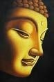
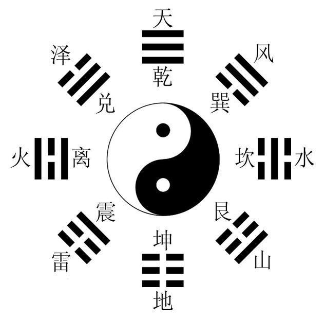
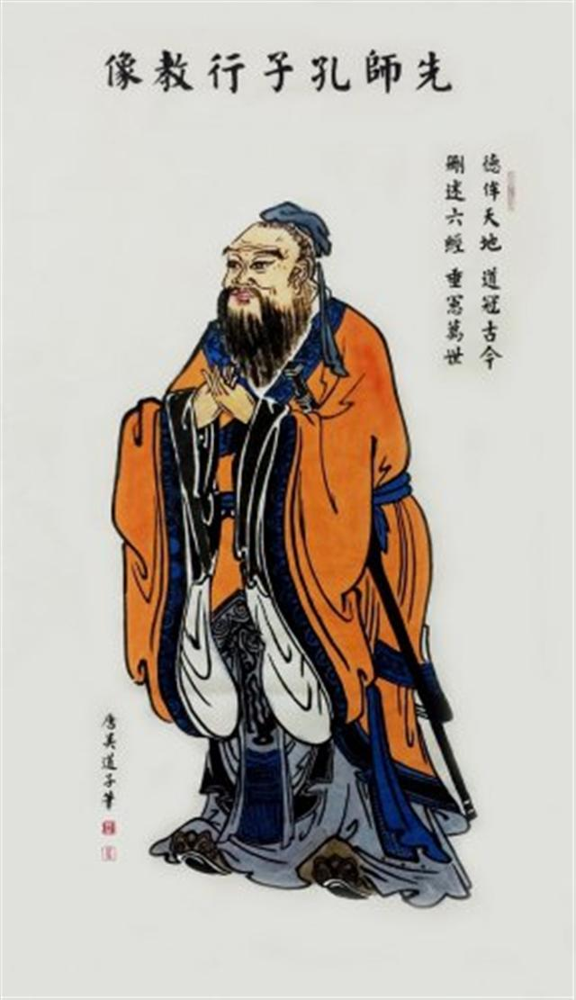

Chinese Religions
There are three major religions in China, Confucianism, Taoism and Buddhism, though many would consider Confucianism more a set of philosophy than a religion.
Buddhism
Buddhism might have arrived in China as early as the third century BC because there was a history record that the Qin Emperor ordered to eliminate the religion about 213 BC. Different forms of Buddhism evolved as it reached more of the population at various eras and by different spreading routes. The social and ethnical background in each area also affected the way each of them developed. Eventually Han, Tibetan and Southern Buddhism formed as distinguished practices and core beliefs.
Taoism
The word Tao in Chinese means "way," indicating a way of life or philosophy. In the 6th century BC, originated from the ideas of Lao-tzu, Taoism became "the way". Taoism speaks of a eternal Tao which is considered no name and impossible to fully known by human. It is the creating force and unifying element of all that is in the universe. Everything is basically one despite the manifestation in different forms. The life of an individual comes from the One and goes back into it.
Confucianism
Confucianism has influenced many aspects of Chinese culture. Confucius was the most famous Philosopher in Chinese history. He lived in the Zhou Dynasty. Turmoil and injustices were prevalent in the society at the time. Through visiting a few nations and teaching along the way, he developed a new moral code based on respect, education, kindness, integrity, and strong family bonds. His teachings gradually became the basis for religious and moral life throughout China. Confucius' words were recorded by his students in Lun Yu.
"Human natures are in common, but their habits carry them far apart."
"Forget injury. Never forget kindness."